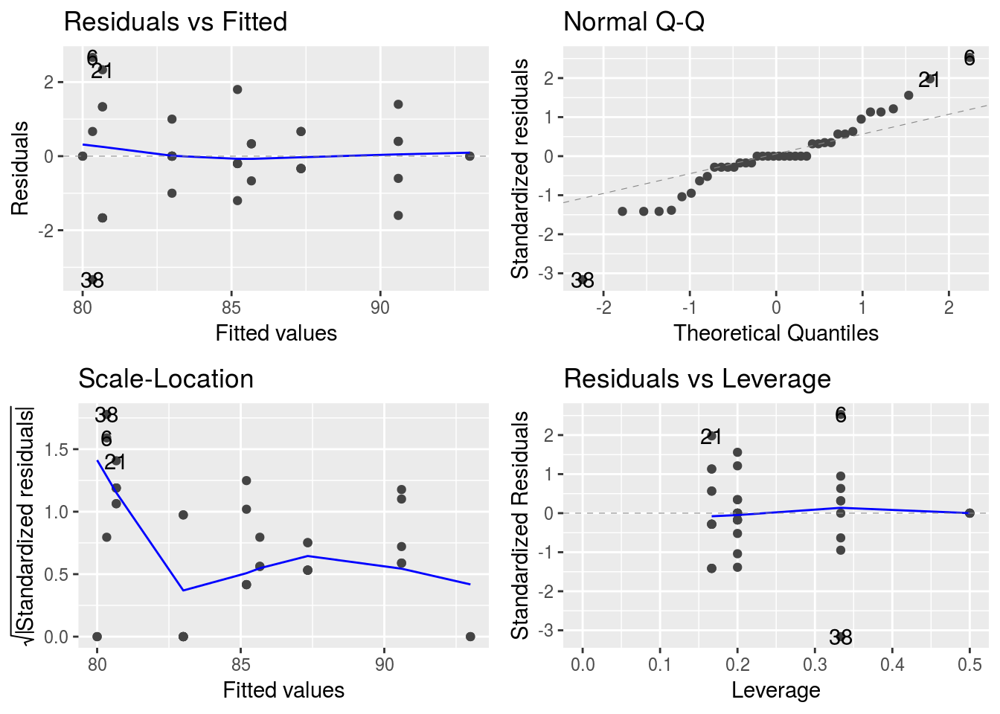

Analyse de la variance à 2 facteurs
Présentation
On a enregistré pour 40 personnes, leur fréquence cardiaque au repos. On a noté pour chacune d’entre elles un niveau d’activité physique moyen ainsi que leur sexe. La variable sport varie de 1, très sportif, à 5 très sédentaire.
freq <- read.table("data/FreqCardiaqueEq.txt", skip=1, header=T, sep=" ")
summary(freq)## freqC Sport Sexe
## Min. :76.00 Min. :1 F:20
## 1st Qu.:81.75 1st Qu.:2 M:20
## Median :84.00 Median :3
## Mean :84.45 Mean :3
## 3rd Qu.:87.00 3rd Qu.:4
## Max. :93.00 Max. :5##Attention age numerique si pas de precision
freq <- freq %>% mutate(Sport_fac = as.factor(Sport))
summary(freq)## freqC Sport Sexe Sport_fac
## Min. :76.00 Min. :1 F:20 1:8
## 1st Qu.:81.75 1st Qu.:2 M:20 2:8
## Median :84.00 Median :3 3:8
## Mean :84.45 Mean :3 4:8
## 3rd Qu.:87.00 3rd Qu.:4 5:8
## Max. :93.00 Max. :5Etude descriptive des données
Plan d’expérience :
with( freq,
table(Sexe, Sport)
)## Sport
## Sexe 1 2 3 4 5
## F 4 4 4 4 4
## M 4 4 4 4 4# ou en mode tidy
freq %>% count(Sexe, Sport)## # A tibble: 10 x 3
## Sexe Sport n
## <fct> <int> <int>
## 1 F 1 4
## 2 F 2 4
## 3 F 3 4
## 4 F 4 4
## 5 F 5 4
## 6 M 1 4
## 7 M 2 4
## 8 M 3 4
## 9 M 4 4
## 10 M 5 4Moyennes et écart-types par groupes :
freq %>% group_by(Sexe) %>% summarise(mean_freq = mean(freqC))## # A tibble: 2 x 2
## Sexe mean_freq
## <fct> <dbl>
## 1 F 84.3
## 2 M 84.6freq %>% group_by(Sport) %>% summarise(mean_freq = mean(freqC))## # A tibble: 5 x 2
## Sport mean_freq
## <int> <dbl>
## 1 1 80.1
## 2 2 81.8
## 3 3 84.8
## 4 4 85.5
## 5 5 90.1freq %>% group_by(Sexe, Sport) %>% summarise(mean_freq = mean(freqC))## # A tibble: 10 x 3
## # Groups: Sexe [?]
## Sexe Sport mean_freq
## <fct> <int> <dbl>
## 1 F 1 81
## 2 F 2 82.5
## 3 F 3 82.5
## 4 F 4 85.8
## 5 F 5 89.8
## 6 M 1 79.2
## 7 M 2 81
## 8 M 3 87
## 9 M 4 85.2
## 10 M 5 90.5p1 <- ggplot(freq, aes(y=freqC, x = Sport_fac)) + geom_boxplot()
p2 <- ggplot(freq, aes(y=freqC, x = Sexe)) + geom_boxplot()
ggarrange(p1,p2+rremove('ylab'))
freq %>%
ggplot() +
aes(x = Sport_fac, color = Sexe, group = Sexe, y = freqC) +
stat_summary(fun.y = mean, geom = "point") +
stat_summary(fun.y = mean, geom = "line")
Anova deux facteurs, plan équilibré
Question : ``Y a-t-il un effet de la pratique sportive ou du sexe sur la frequence cardiaque au repos ?’’
Modèle avec interaction :
lmInt <- lm(freqC~Sexe+Sport+Sexe*Sport, data=freq)
summary(lmInt)##
## Call:
## lm(formula = freqC ~ Sexe + Sport + Sexe * Sport, data = freq)
##
## Residuals:
## Min 1Q Median 3Q Max
## -3.300 -1.319 -0.325 1.600 4.550
##
## Coefficients:
## Estimate Std. Error t value Pr(>|t|)
## (Intercept) 78.0750 1.0936 71.395 < 2e-16 ***
## SexeM -1.5000 1.5465 -0.970 0.339
## Sport 2.0750 0.3297 6.293 2.82e-07 ***
## SexeM:Sport 0.6000 0.4663 1.287 0.206
## ---
## Signif. codes: 0 '***' 0.001 '**' 0.01 '*' 0.05 '.' 0.1 ' ' 1
##
## Residual standard error: 2.085 on 36 degrees of freedom
## Multiple R-squared: 0.7458, Adjusted R-squared: 0.7246
## F-statistic: 35.21 on 3 and 36 DF, p-value: 8.35e-11 lmInt <- lm(freqC~Sexe+Sport_fac+Sexe*Sport_fac, data=freq)
summary(lmInt)##
## Call:
## lm(formula = freqC ~ Sexe + Sport_fac + Sexe * Sport_fac, data = freq)
##
## Residuals:
## Min 1Q Median 3Q Max
## -3.25 -1.00 0.00 1.00 3.75
##
## Coefficients:
## Estimate Std. Error t value Pr(>|t|)
## (Intercept) 81.0000 0.8563 94.588 < 2e-16 ***
## SexeM -1.7500 1.2111 -1.445 0.158819
## Sport_fac2 1.5000 1.2111 1.239 0.225104
## Sport_fac3 1.5000 1.2111 1.239 0.225104
## Sport_fac4 4.7500 1.2111 3.922 0.000473 ***
## Sport_fac5 8.7500 1.2111 7.225 4.84e-08 ***
## SexeM:Sport_fac2 0.2500 1.7127 0.146 0.884923
## SexeM:Sport_fac3 6.2500 1.7127 3.649 0.000991 ***
## SexeM:Sport_fac4 1.2500 1.7127 0.730 0.471147
## SexeM:Sport_fac5 2.5000 1.7127 1.460 0.154770
## ---
## Signif. codes: 0 '***' 0.001 '**' 0.01 '*' 0.05 '.' 0.1 ' ' 1
##
## Residual standard error: 1.713 on 30 degrees of freedom
## Multiple R-squared: 0.8571, Adjusted R-squared: 0.8143
## F-statistic: 20 on 9 and 30 DF, p-value: 2.327e-10Question : Y a-t-il un effet de la pratique sportive sur la fréquence cardiaque au repos ?'' \\ Question :Y a-t-il un effet du sexe sur la fréquence cardiaque au repos ?’’
Question : ``Y a-t-il un effet du sexe en interaction avec la pratique sportive sur la fréquence cardiaque au repos ?’’
anova(lmInt)## Analysis of Variance Table
##
## Response: freqC
## Df Sum Sq Mean Sq F value Pr(>F)
## Sexe 1 0.90 0.900 0.3068 0.583745
## Sport_fac 4 475.15 118.788 40.4957 1.105e-11 ***
## Sexe:Sport_fac 4 51.85 12.963 4.4190 0.006299 **
## Residuals 30 88.00 2.933
## ---
## Signif. codes: 0 '***' 0.001 '**' 0.01 '*' 0.05 '.' 0.1 ' ' 1 Anova(lmInt, type="II")## Anova Table (Type II tests)
##
## Response: freqC
## Sum Sq Df F value Pr(>F)
## Sexe 0.90 1 0.3068 0.583745
## Sport_fac 475.15 4 40.4957 1.105e-11 ***
## Sexe:Sport_fac 51.85 4 4.4190 0.006299 **
## Residuals 88.00 30
## ---
## Signif. codes: 0 '***' 0.001 '**' 0.01 '*' 0.05 '.' 0.1 ' ' 1autoplot(lmInt, data = freq)Modèle sans interaction :
lm1 <- lm(freqC~Sexe+Sport_fac, data=freq)
summary(lm1)##
## Call:
## lm(formula = freqC ~ Sexe + Sport_fac, data = freq)
##
## Residuals:
## Min 1Q Median 3Q Max
## -4.275 -1.600 -0.125 1.462 3.100
##
## Coefficients:
## Estimate Std. Error t value Pr(>|t|)
## (Intercept) 79.9750 0.7855 101.816 < 2e-16 ***
## SexeM 0.3000 0.6413 0.468 0.643
## Sport_fac2 1.6250 1.0141 1.602 0.118
## Sport_fac3 4.6250 1.0141 4.561 6.32e-05 ***
## Sport_fac4 5.3750 1.0141 5.300 6.99e-06 ***
## Sport_fac5 10.0000 1.0141 9.861 1.67e-11 ***
## ---
## Signif. codes: 0 '***' 0.001 '**' 0.01 '*' 0.05 '.' 0.1 ' ' 1
##
## Residual standard error: 2.028 on 34 degrees of freedom
## Multiple R-squared: 0.7729, Adjusted R-squared: 0.7395
## F-statistic: 23.15 on 5 and 34 DF, p-value: 4.63e-10Question : Y a-t-il un effet de la pratique sportive sur la fréquence cardiaque au repos ?''\\ Question :Y a-t-il un effet du sexe sur la fréquence cardiaque au repos ?’’
anova(lm1)## Analysis of Variance Table
##
## Response: freqC
## Df Sum Sq Mean Sq F value Pr(>F)
## Sexe 1 0.90 0.900 0.2188 0.6429
## Sport_fac 4 475.15 118.788 28.8793 1.643e-10 ***
## Residuals 34 139.85 4.113
## ---
## Signif. codes: 0 '***' 0.001 '**' 0.01 '*' 0.05 '.' 0.1 ' ' 1 Anova(lm1, type="II")## Anova Table (Type II tests)
##
## Response: freqC
## Sum Sq Df F value Pr(>F)
## Sexe 0.90 1 0.2188 0.6429
## Sport_fac 475.15 4 28.8793 1.643e-10 ***
## Residuals 139.85 34
## ---
## Signif. codes: 0 '***' 0.001 '**' 0.01 '*' 0.05 '.' 0.1 ' ' 1autoplot(lm1){Anova deux facteurs, plan déséquilibré}
freq2 <- read.table(file="data/FreqCardiaqueDes1.txt", header=T)
freq2 <- freq2 %>% mutate(Sport_fac = as.factor(Sport))
freq2 %>% count(Sport, Sexe) ## # A tibble: 10 x 3
## Sport Sexe n
## <int> <fct> <int>
## 1 1 F 6
## 2 1 M 3
## 3 2 F 3
## 4 2 M 2
## 5 3 F 5
## 6 3 M 6
## 7 4 F 3
## 8 4 M 5
## 9 5 F 2
## 10 5 M 5Moyennes et écart-types par groupes :
freq2 %>% group_by(Sport) %>% summarise(mean_freq = mean(freqC)) ## # A tibble: 5 x 2
## Sport mean_freq
## <int> <dbl>
## 1 1 80.6
## 2 2 81.8
## 3 3 85.4
## 4 4 85.4
## 5 5 91.3freq2 %>% group_by(Sexe) %>% summarise(mean_freq = mean(freqC)) ## # A tibble: 2 x 2
## Sexe mean_freq
## <fct> <dbl>
## 1 F 83.7
## 2 M 85.9freq2 %>% group_by(Sport, Sexe) %>% summarise(mean_freq = mean(freqC)) ## # A tibble: 10 x 3
## # Groups: Sport [?]
## Sport Sexe mean_freq
## <int> <fct> <dbl>
## 1 1 F 80.7
## 2 1 M 80.3
## 3 2 F 83
## 4 2 M 80
## 5 3 F 83
## 6 3 M 87.3
## 7 4 F 85.7
## 8 4 M 85.2
## 9 5 F 93
## 10 5 M 90.6p1 <- ggplot(freq2, aes(y=freqC, x = Sport_fac)) + geom_boxplot()
p2 <- ggplot(freq2, aes(y=freqC, x = Sexe)) + geom_boxplot()
ggarrange(p1,p2+rremove('ylab'))freq2 %>%
ggplot() +
aes(x = Sport_fac, color = Sexe, group = Sexe, y = freqC) +
stat_summary(fun.y = mean, geom = "point") +
stat_summary(fun.y = mean, geom = "line") lm2 <- lm(freqC~Sexe+Sport, data=freq2)
autoplot(lm2)
anova(lm2)## Analysis of Variance Table
##
## Response: freqC
## Df Sum Sq Mean Sq F value Pr(>F)
## Sexe 1 46.88 46.88 9.9993 0.003122 **
## Sport 1 408.02 408.02 87.0269 2.944e-11 ***
## Residuals 37 173.47 4.69
## ---
## Signif. codes: 0 '***' 0.001 '**' 0.01 '*' 0.05 '.' 0.1 ' ' 1 Anova(lm2, type="II")## Anova Table (Type II tests)
##
## Response: freqC
## Sum Sq Df F value Pr(>F)
## Sexe 1.22 1 0.260 0.6131
## Sport 408.02 1 87.027 2.944e-11 ***
## Residuals 173.47 37
## ---
## Signif. codes: 0 '***' 0.001 '**' 0.01 '*' 0.05 '.' 0.1 ' ' 1